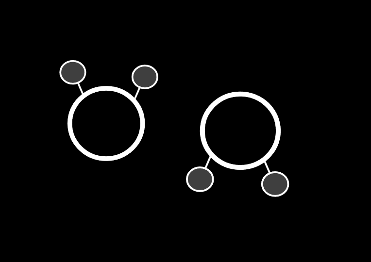

Rayaan Mirkar
Hi, I'm Rayaan, and I am passionate about using computational methods to analyze and understand advanced genetic material.
I am current working on implementing BiLSTM (bidirectional long short-term memory) neural networks, which excel at recognizing and capturing long-term patterns and motifs across a bacteriophage's proteome, with the goal of being able to eventually classify phage
lifestyle with greater context and accuracy. I am also exploring efficient genome chunking methods for computationally efficient training.
I'm a rising sophomore at the
Edison STEM Academy, and I am currently
studying
computational biology, neuroscience, and machine learning.

Research & Projects
I've been curious about long term patterns in genetic material, and finding efficient ways to chunk genetic sequences to simplify computationally heavy tasks.

PHAGER: Implementing BiLSTM Neural Networks To Classify Bacteriophage Lifestyle
GitHub Repository
We used bidirectional neural networks to stimulate and train a model that analyzes long term motifs in bacteriophage proteomes, ultimately aiming to be able to predict phage lifestyle with greater context.

Isometric: A CLI Tool for Efficient Research Repository Cloning with Local LLM-powered Dependency Inferences and Environments
GitHub Repository
Isometric is a comprehensive CLI (command-line interface) tool that allows researchers to clone and recreate research-oriented GitHub repositories with a single command, while producing a virtual environment with installed dependencies and a local LLM that infers necessary libaries/tools. Still a WIP.